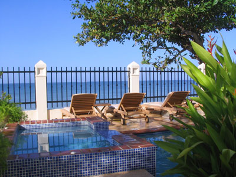
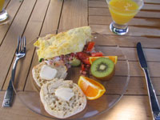
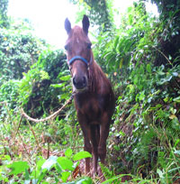

Tres Sirenas
Tres Sirenas Bed & Breakfast proved to be a calming force during this weekend of near-disasters. Puerto Rico can be like Florida one minute and like Nicaragua the next, and if you don’t have a nice hotel, you simply don’t have anything.
The weekend began inauspiciously: our flight abandoned the runway at the last minute so something could be repaired. We sat in the plane for two hours before we took off (during which time we were subjected to several episodes of that Raymond show, followed by Seabiscuit!). After landing in San Juan, we had some trouble finding the Thrifty counter, then hit traffic jam after traffic jam all across the top of the island on the way to Rincón. We finally arrived at 8 pm, and I was immediately delighted with my choice.

Tres Sirenas is lovely and elegant. $170 a night (total price) is more than I’d like to spend, but no hotel has ever been more worth it to me. We were greeted by the owner, a pretty and polite former New Yorker. She showed us to our well-appointed room with a view of the pool and the ocean (this place is ten feet from the water). She suggested that we dash off if we wanted dinner, since everything closes early. She recommended the Black Eagle on nearby route 413, which was a typical tourist bar with atypically good food. We shared three fried things, had a few beers, and headed back for a dip in the hot tub (which isn’t really hot late at night, but sitting next to the ocean in a warm tub drinking a cold beer is divine).

We awoke Saturday to a delicious omelette with tropical fruit, and we spent the rest of the morning snorkeling before heading to San German for the wedding (which was followed by lots of food and salsa dancing). We got home late and enjoyed the hot tub once more.
Sunday morning was another homemade breakfast followed by more snorkeling, although things were quite a bit more exciting this time. The car keys found their way into my fin, which found its way into the ocean…two hours later, as we packed up our things, we realized the keys were nowhere to be found. My heart sank when I realized what happened, and I put on my mask and dove into the water. n8 thought I was crazy, but when you’re in the middle of nowhere, on the opposite end of the island to your 9 pm flight, what else can you do?
After twenty minutes of searching, Poseidon smiled on me and I saw the Thrifty keychain waving like a piece of seaweed a few feet deep. I don’t think I’ve ever been so relieved. I’d say it trumps any needle in a haystack to find a key in the friggin’ Atlantic Ocean! Needless to say, we were happy to get back to the hotel for a rest and a beer before packing and heading east.

Things got more exciting on the backroads of Puerto Rico: we saw lightning strike right over our heads, a flood following the most intense rainstorm I’ve ever seen, shoeless people riding horses, rabid dogs, a cockfight…it was a real island adventure. It turns out that we lingered too long, because we came closer than I’ve ever been to missing a flight. My little bit of Spanish saved us from certain death in the housing project in which we lost our way. We arrived after 8:30 PM for a 9:09 flight (happily, there was still time to buy six liters of duty-free liquor, of which we enjoyed a tipple or two on the flight).
I was happy to climb into bed at 1 am last night, since it was the last place I expected to be sleeping. No more vacations until Christmas, please!
Comments
your weekend in the sun sounds amazing. you are a hero for finding those keys!!!
Add a comment